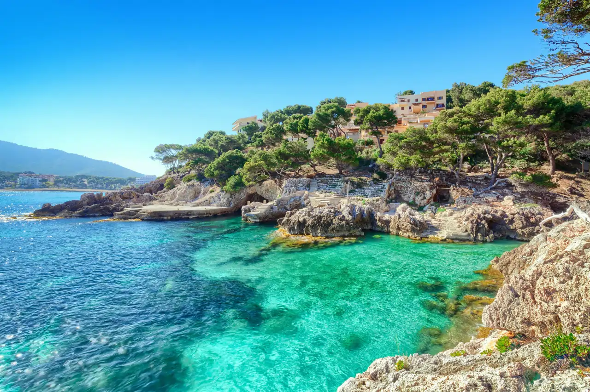
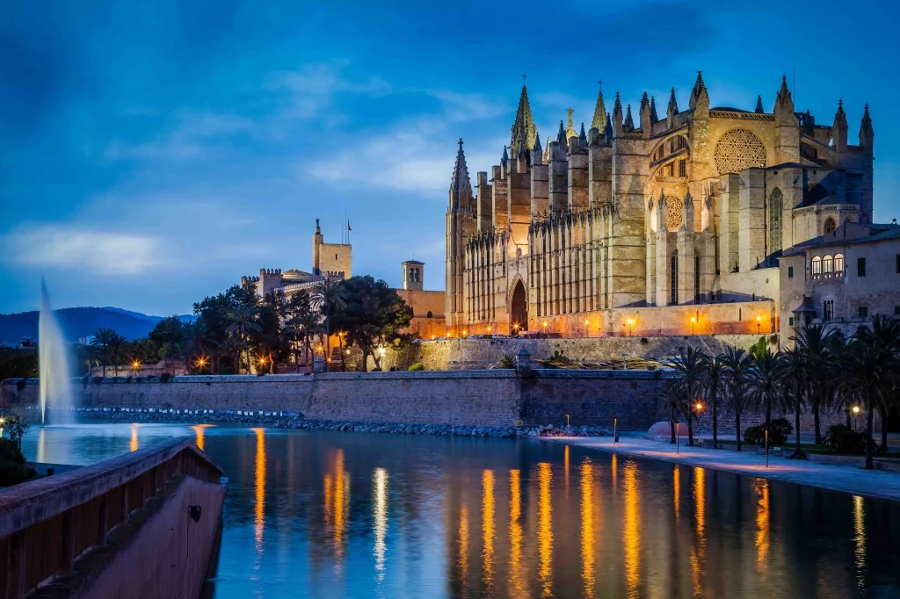

Mallorca
Introducción
Mallorca es la isla más grande del archipiélago de las Islas Baleares y uno de los destinos más conocidos del mar Mediterráneo. Destaca por la diversidad de sus paisajes, su patrimonio cultural y su clima, lo que la convierte en un lugar de gran importancia turística y social dentro de España.
Geografía y naturaleza
La isla presenta una gran variedad geográfica. En el norte se encuentra la Serra de Tramuntana, una cadena montañosa declarada Patrimonio de la Humanidad por la UNESCO, mientras que el resto del territorio cuenta con numerosas playas, calas y zonas rurales. Esta diversidad natural permite la práctica de actividades como senderismo, ciclismo y deportes acuáticos.
Imágenes representativas


Cultura y patrimonio
Mallorca cuenta con un importante patrimonio histórico y cultural. En la ciudad de Palma destacan monumentos como la Catedral de Santa María, además de castillos, murallas y edificios históricos. La isla conserva tradiciones propias, fiestas populares y una gastronomía basada en productos locales.
Importancia económica y situación actual
El turismo es el principal motor económico de Mallorca y atrae a millones de visitantes cada año. Este desarrollo ha impulsado la economía y las infraestructuras, pero también ha generado retos relacionados con la sostenibilidad y la conservación del entorno natural. En la actualidad, se busca un equilibrio entre el crecimiento económico y la protección del medio ambiente.